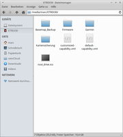

Firmware
Dieser Artikel wurde für die folgenden Ubuntu-Versionen getestet:
Dieser Artikel ist größtenteils für alle Ubuntu-Versionen gültig.
Zum Verständnis dieses Artikels sind folgende Seiten hilfreich:
Archive entpacken, optional
Einen Editor öffnen, optional
Garmin  bietet zur Aktualisierung der Gerätesoftware nur einen WebUpdater für Microsoft Windows und Mac OS X an. Unter Linux muss man die Firmware daher auf anderem Wege herunterladen. Allerdings wird lediglich die Gerätesoftware aktualisiert, zusätzliche Updates bleiben außen vor. Diese können nur mit dem WebUpdater aufgespielt werden. Zur Aktualisierung der Firmware wird das Gerät per USB mit dem Computer verbunden.
bietet zur Aktualisierung der Gerätesoftware nur einen WebUpdater für Microsoft Windows und Mac OS X an. Unter Linux muss man die Firmware daher auf anderem Wege herunterladen. Allerdings wird lediglich die Gerätesoftware aktualisiert, zusätzliche Updates bleiben außen vor. Diese können nur mit dem WebUpdater aufgespielt werden. Zur Aktualisierung der Firmware wird das Gerät per USB mit dem Computer verbunden.
Firmware¶
Die Gerätesoftware kann indirekt von Garmin oder über eine Internetseite heruntergeladen werden, welche die Firmware anbieten. Es gibt ebenfalls Seiten, welche den Link zu Garmin aufführen. Eventuell ist es nötig, ein Archiv mit der gewünschten Datei, zu entpacken [1].

Achtung!
Bevor man sich dir Firmware für das eigene Gerät von einer der verlinkten Internetseiten herunterlädt, unbedingt das Gerät korrekt identifizieren - ansonsten wird das Gerät irreparabel beschädigt.
Garmin¶
Beim Hersteller Garmin ist der Link nur indirekt zu erreichen und es steht immer nur die letzte Version zur Verfügung. Auf der Herstellerseite kann man die aktuelle Firmware des Navigationssystems in Erfahrung bringen.
Der Download-Link setzt sich aus einem Teil der URL (http://download.garmin.com/software/), der Bezeichnung des Navigationssystems (eTrex20_30), dem Zusatz Webupdater (_Webupdater), der Firmwareversion (__430) und der Dateiendung .gcd zusammen.
Es ergibt sich der folgende Link:
http://download.garmin.com/software/eTrex20_30_Webupdater__450.gcd
Hinweis:
Die ursprünglichen Adressen, welche mit http://www.garmin.com/software/ beginnen, funktionieren nicht mehr.
Eventuell muss man im Vorfeld recherchieren, wie der genaue Link für das verwendete Gerät lautet. Eine erste Orientierungsmöglichkeit kann die Tabelle am Ende des Artikels sein.
|  |
| Verzeichnistruktur |
Upgrade¶
Die gewünschte Firmware, welche als .gcd-Datei vorliegt, wird nach dem Herunterladen in GUPDATE.GCD umbenannt. Anschließend wird diese Datei in den Ordner Garmin des Geräts kopiert. Das Navigationsgerät findet die Firmware und spielt diese ein. Während dieses Zeitraums, welcher einige Minuten dauern kann, darf das Navi nicht ausgeschaltet werden!
Hinweis:
Im Vorfeld sollte der Akkustand überprüft werden, da es bei einem unvollständigen Vorgang zu Problemen kommen kann - bis hin zur Unbrauchbarkeit des Geräts.
Achtung!
Verwendung auf eigene Gefahr. Alternativ den offiziellen Weg mit dem WebUpdater unter einem anderen Betriebssystem durchführen.
Downgrade¶
Unter Umständen kann es sein, dass man eine alte Firmware verwenden möchte z.B. weil sie stabiler läuft. Um ein Downgrade durchzuführen muss die Versionangabe der beiden Dateien system.xml und GarminDevice, welche sch im Ordner Garmin befinden, auf eine niedrigere Version gebracht werden [2] als die, welche man später verwenden möchte. Im Vorfeld sollte man überprüfen ob dieser Weg notwendig ist oder ob man die niedrigere Firmware-Version ggf. direkt aufspielen kann.
system.xml
1 2 3 4 | <SoftwareVersion> Software Version 2.90 </SoftwareVersion> |
GarminDevice.xml
1 2 3 | <SoftwareVersion> 290 </SoftwareVersion> |
Achtung!
Verwendung auf eigene Gefahr.
Geräte¶
In der Tabelle sind Geräte aufgeführt, mit denen das geschilderte Vorgehen problemlos durchgeführt werden konnte. Die Struktur des Firmwarenamens erleichtert die Suche. Die hier genannte Versionsnummer XXX muss angepaßt werden!
| Firmware | |||
| Gerät | USB-ID | Version | Firmwarenamensstruktur |
| Dakota | 5.80  | Dakota_WebUpdater__XXX.gcd | |
| eTrex 10 | 3.20 | eTrex10_Webupdater__XXX.gcd | |
| eTrex 20 | 4.30 | eTrex20_30_Webupdater__XXX.gcd | |
| eTrex 30 | 091e:2519 | 4.50 | eTrex20_30_Webupdater__XXX.gcd |
| eTrex 30x | 2.50 | eTrex20x_30x_Webupdater__XXX.gcd | |
| GPSmap 62/62s/62st/78/78s | 6.30 | GPSMAP62_78_WebUpdater__XXX.gcd | |
| GPSmap 62sc/62stc | 4.90 | GPSMAP62sc_62stc_WebUpdater__XXX.gcd | |
| GPSmap 64/64s/64st | 4.30 | GPSMAP64_WebUpdater__XXX.gcd | |
| Montana | 6.50 | Montana_WebUpdater__XXX.gcd | |
| Nüvi 205T | 091e:2353 | 7.80 | nuvi2x5_GCDFile__XXX.gcd |
| Oregon 300/Oregon 400 | 4.20 | Oregon_WebUpdater__XXX.gcd | |
| Oregon 450(T)/550(T) | 6.60 | Oregonx50_WebUpdater__XXX.gcd | |
| Oregon 600/Oregon 650 | 4.60 | Oregon6x0_WebUpdater__XXX.gcd | |
- Erstellt mit Inyoka
-
 2004 – 2017 ubuntuusers.de • Einige Rechte vorbehalten
2004 – 2017 ubuntuusers.de • Einige Rechte vorbehalten
Lizenz • Kontakt • Datenschutz • Impressum • Serverstatus -
Serverhousing gespendet von